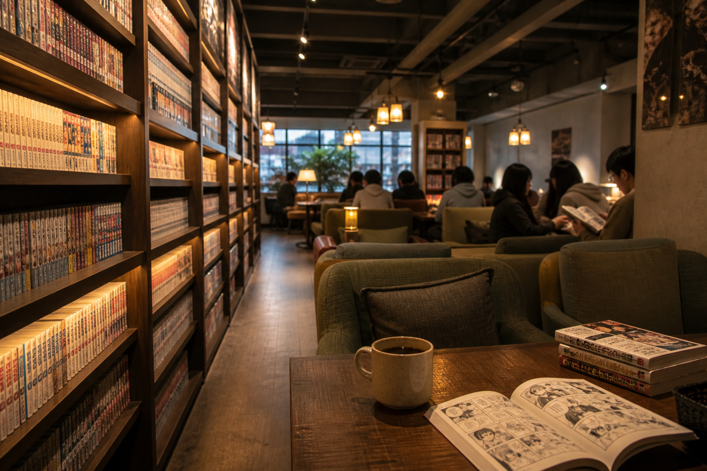

만화카페
만화를 마음껏 읽고 음료·간단한 안주를 즐기는 시간제 카페.
만화카페(만화방)는 시간제로 자리를 빌려 국내·일본 만화책과 웹툰 잡지를 읽는 한국식 실니다. 홍대·신촌·대학가에 많고, 혼자 조용히 쉬기 좋습니다.
입구에서 시간권·음료를 결제하고 자리를 배정받습니다. 신간·인기작은 대출이 제한될 수 있고, 책은 다 본 뒤 제자리에 꽂아 주세요.
만화카페(만화방)는 시간제로 자리를 빌려 국내·일본 만화책과 웹툰 잡지를 읽는 한국식 실니다. 홍대·신촌·대학가에 많고, 혼자 조용히 쉬기 좋습니다.
입구에서 시간권·음료를 결제하고 자리를 배정받습니다. 신간·인기작은 대출이 제한될 수 있고, 책은 다 본 뒤 제자리에 꽂아 주세요.
가격 분위기 보통 시간당 수천 원대 + 음료. 심야·종일권 매장도 있습니다.
이용 팁 음식·음료는 매장 규칙을 지키고, 큰 소리·촬영은 자제하세요. 종료 전 카운터에서 정산합니다.